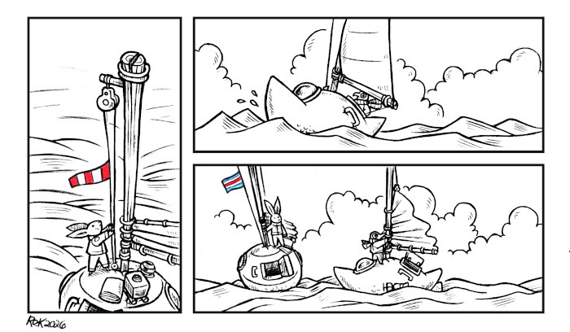
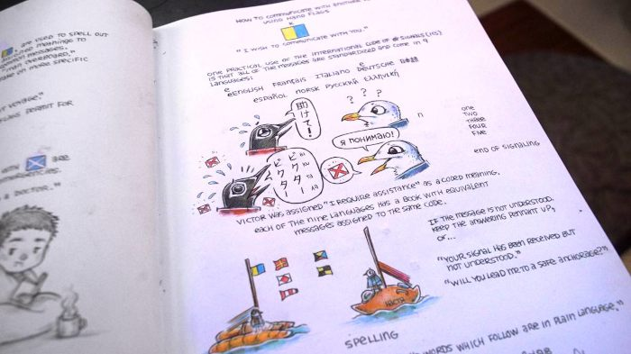
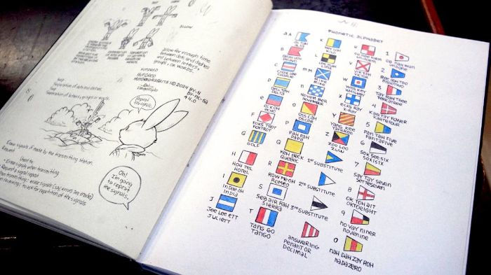

About
About Projects
Projects Games
Games Stories
Stories Store
Store Hobby
Hobby Notes
Notes How-to
How-to
Rabbit Waves is a comic, which serves as a vessel to expand in a playful way on some of our favourite subjects, like communication, hand tools, food preservation, and seafaring. It began in November 2024, and is ongoing.
It follows the rabbit Hazy, as they sail aboard their turnip sailboat named Teapot. Other recurrent characters include Arkady(Ark, for short), a gull who sails aboard a kumara sailboat named Natsya.
Visit Rabbit WavesThe idea for this project came after discussing the disappearance of certain traditional seasteading skills and maritime communication knowledge that we believe are valuable when electronics misbehave, but that are also just generally fun to learn and use.
All of the Rabbit Waves are is done by hand, with ink and coloring pencils. The art is scanned and processed digitally with Gimp.

